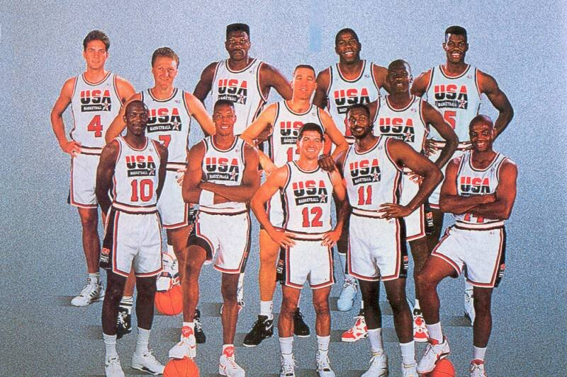

The Dream Team was the basketball team sent to represent the United States in the 1992 Olympics. They were extremely dominant on their way to winning a gold medal as 11 of the 12 roster members were Hall of Famers. They made a lot of changes including changes to the olympics,worldwide basketball, and how basketball was viewed
One way that the Dream Team inspired change is that they changed the way that basketball was viewed at the Olympics. Previously, basketball was just another sport in the olympics. Fans tuned into the Olympics to watch other sports. But the Dream Team made people start seeking out the basketball games. It was said in the documentary that the idea was that people would tune into the first game, and then go back to watch the track and field events. But the opposite happened. People watched the first game and then kept on watching the basketball games. That has carried on to even today as many people tune into the Olympics to watch the basketball games.
The Dream Team also changed the Olympics in general.One way this was done was this was the first time that professional American players represented their country. This inspired other countries to also send their top professional athletes to compete which in turn had an effect on international competition by making the level of competition risein the Olympics. Another way this was done was the team featured many superstar players like Micheal Jordan, Larry Bird, Magic Johnson, and more which brought more viewers and eyes to the Olympics and more commercial oppourtunites.
The Dream Team also changed basketball not only in the US but internationallyas well. They changed basketball in the US by setting the precedentfor NBA players to compete in the Olympics. This inspired young American basketball players to aspire to play in the Olympics and represent their country like their heroes of the Dream Team did. The Dream Team changed basketball internationally by making basketball a global game. They inspired young fans from other countriesto pick up basketball instead of the other sports that these countries usually participated in. The NBA is now a globalgame now with most of the top players today being of foreign Nationality. Former NBA stars such as Manu Ginoboli, Marc Gasol, and Pau Gasol cite their inspiration of picking up a basketball was watching the 1992 Olympics and seeing the Dream Team play.
 Analysis Informal Writing